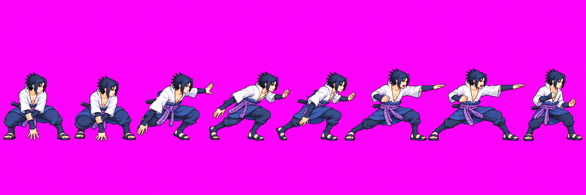
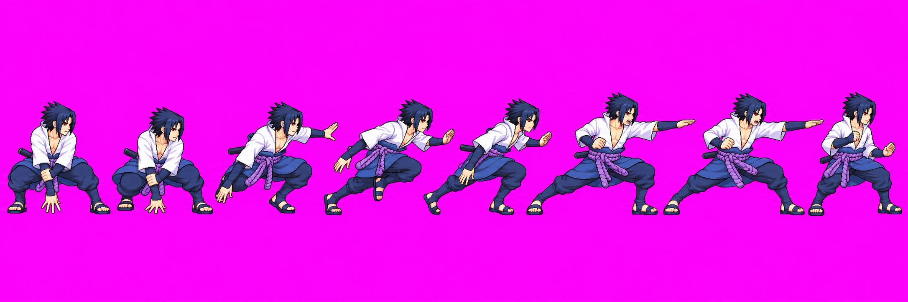
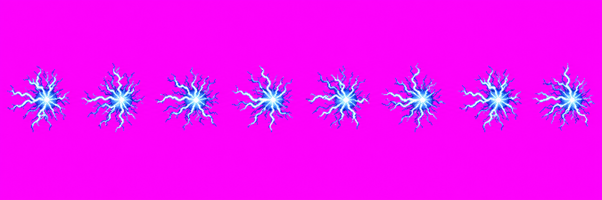

Sasuke skills revamp · batch 1
The four A2-A5 Chidori effects below were approved via Claude relay skills #14; Claude owns their HD packing and game integration. The user approved special v14 as drawn and chidori v01 via Claude relay skills #17. Then relay #18 authorized special v15 as a final redraw at the approved idle build. v14 remains in raw/_qa_hold. The user approved v15 via Claude skills relay #20; Claude applies its trial pack setup and integrates it in place of v13. Chidori remains approved for Claude HD packing.
special v15 approved; Claude integration pending: Candidate is 2172×724. Claude's trial pack using a whole-figure split and special_v15.json (auto-head x0.905, bodyHeight 157) reports head 1.10, no clipping and a passing scale gate. Claude owns applying the settings, remeasuring hand anchors and integrating; this gallery does not claim final atlas/Astra/runtime verification. The earlier unadjusted pack failed scale/clipping and measured v13 only in the body report; that result is retained as provenance but is superseded by Claude's trial. See art/characters/sasuke/production/skills-revamp-batch1/special_v15_provenance.md.
Previous technical status: special v14 failed the strict quantized pack scale gate and no candidate atlas was written: measured f3/f0 head-probe ratio 1.14/1.44, with right-edge clipping of f3-f6 by 55/6/44/20 px. The body command had no packed candidate to measure; the existing body report is v13 and does not apply. Astra HOLD: clipped limbs, missing thrust hand, oversized-looking head/clothing volume. chidori v01 packs into eight 128px candidate frames, but the source is 2172×724 with letterboxing and this branch's packer does not produce the requested HD atlas. Source scan: 125,575 RGBA colors; corner RGB(242,13,242) instead of exact #FF00FF. Four approved effects remain separately awaiting Claude's fixed HD pack.
User-approved effects · v01
chidoriForm v01 approved drawing

6 frames · 3/3 calls · growing sparks into the formed Chidori knot. Packer found 6 frames; soft halo remains visible.
chidoriBurst v01 approved drawing

8 frames · 2/3 calls · piercing spike, expanding lightning and fade. Packer found 10 automatically; source sidecar now requests even 8-frame splitting. Specks were removed in preview.
chidoriSpear v01 approved drawing

8 frames · 1/3 calls · thin blade grows, holds, then breaks into sparks. Packer found 9 automatically; source sidecar requests even 8-frame splitting. One packed frame clips.
chidoriCurrent v01 approved drawing

8 frames · 1/3 calls · outward discharge around a clear body area. Packer found 8 frames; it detected one touching pose group.
User-approved drawings · integration pending
special v15 · final call 4/4 user approved via relay #20 Claude integration

Redrawn at the approved idle build per relay #18. User approved v15 via Claude relay send #20. Claude's trial pack reports that the whole-figure split and special_v15.json with auto-head x0.905 and bodyHeight 157 pass scale and avoid clipping (head 1.10). Claude applies the pack-time settings, remeasures hand anchors and integrates v15 in place of v13. Earlier unadjusted clipping/scale findings remain documented in provenance; they do not describe the later trial. Final atlas/Astra/runtime verification is pending.
special v14 · attempt 3 approved drawing technical hold

User approved v14 via Claude relay skills #17, then relay #18 moved it to `_qa_hold/` for a v15 redraw. V15 was later approved via Claude send #20 and is being integrated in place of v13. V14 remains held. Technical holds remain. Four frames clip at the right edge, the thrust hand is missing, and head/body proportions vary across the strip. Astra audit: art/characters/sasuke/production/skills-revamp-batch1/special_v14_astra_audit_2026-10-18.md.
chidori v01 · fresh call 3 approved drawing integration caveats

User approved v01 via Claude relay skills #17 for HD packing and replacing the hand-held placeholder. 3/3 calls in the fresh budget. Eight effect-only crackle knots; source canvas 2172×724 with magenta letterboxing instead of 2048×256. Packer split 8 frames at 128px; 125,575 RGBA colors and near-magenta corner (242,13,242) fail palette/background constraints. HD atlas not produced.
special v14 · attempt 2

Earlier saved attempt, not selected. Painterly/anti-aliased rendering; repeated f5-f6 pose. Preserved in the attempt inventory.
chidori · invalid attempt 3

3/3 calls used. Contains Sasuke inside the effect strip, violating the effect-only requirement. Kept under _qa_hold/; not a candidate.
Attempt ledger and hashes: art/characters/sasuke/production/skills-revamp-batch1/. The packed atlas report, including unrelated sparse-checkout warnings, is in the handoff.